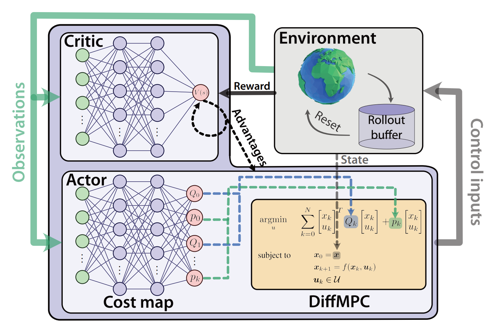
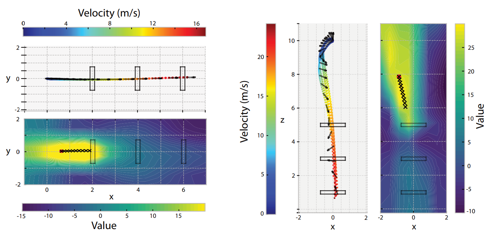
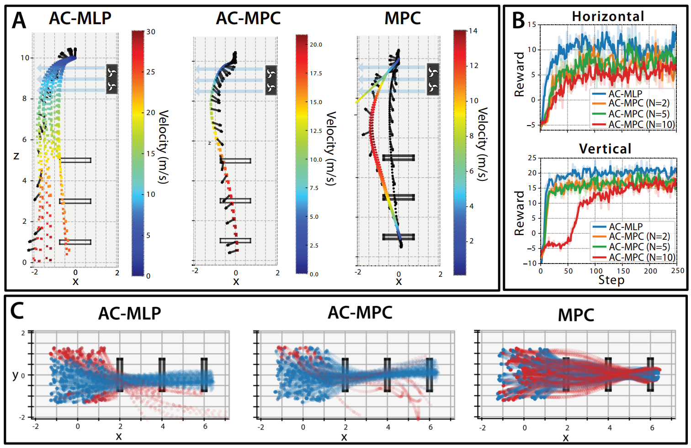
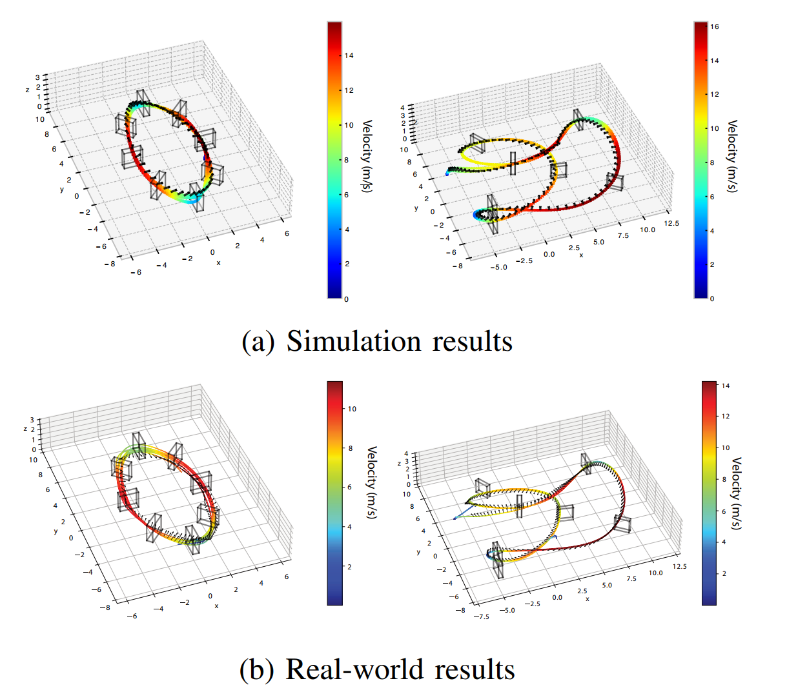
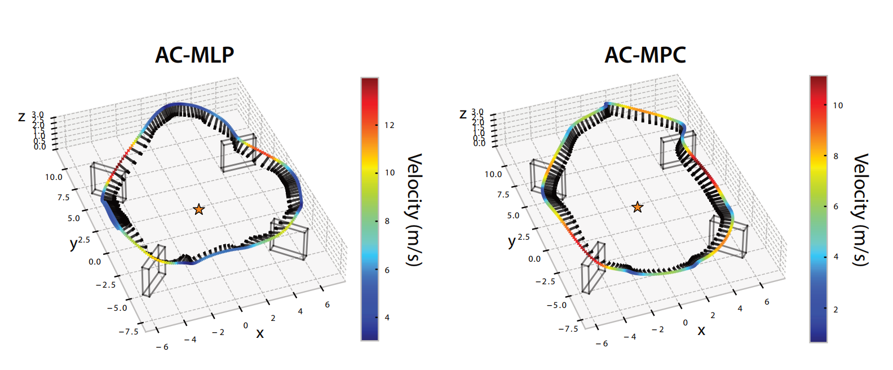

| Title | Actor-Critic Model Predictive Control（Actor-Critic 模型预测控制） |
| Authors | Angel Romero（first author）、Yunlong Song、Davide Scaramuzza（corresponding） |
| Affiliation | 苏黎世大学 & ETH Zurich（University of Zurich and ETH Zurich），Robotics and Perception Group（机器人学与感知组），Department of Informatics and Department of Neuroinformatics，瑞士 |
| Venue | IEEE ICRA 2024（International Conference on Robotics and Automation），2024年5月，Yokohama, Japan。arXiv: 2306.09852v5 |
| DOI / Links | arXiv: 2306.09852 | 项目视频: YouTube | 代码基于 Flightmare + Agilicious 框架。资助: EU Horizon 2020 AERIAL-CORE (No. 871479) + ERC AGILEFLIGHT (No. 864042) |
| TL;DR | 提出 AC-MPC——将可微分 MPC作为 Actor 策略网络的最后一层，嵌入 Actor-Critic (PPO) 强化学习框架中。MPC 负责短期预测优化与在线重规划（利用已知动力学模型），Critic 负责长期价值估计（驱动端到端学习），Neural Cost Map（一个小型 MLP）从观测中学习 MPC 二次代价函数的动态系数 Q 和 p。在四旋翼敏捷穿门飞行（水平/垂直/圆形/SplitS/感知感知飞行）中验证：零样本 sim-to-real 迁移，真实世界最大速度 14 m/s，抗风扰成功率 83%（vs 纯 RL 的 6.5% 和传统 MPC 的 0%）。 |
| Inspiration Source | → What Insight It Inspired | Type |
|---|---|---|
| 人类大脑的双时间尺度预测机制（Rao & Ballard 1999, Friston 2010）——大脑同时进行短期感觉预测和长期规划 | → AC-MPC 借鉴了"系统 1（快速直觉）+ 系统 2（慢速推理）"的双过程理论：MPC = 系统 1（利用动力学模型快速优化短时域动作），Critic = 系统 2（学习任务级长期价值评估，指导系统 1 的目标选择） | 架构 |
| Differentiable MPC（Amos et al., NeurIPS 2018）——通过对 iLQR 不动点进行隐式微分，使 MPC 优化过程可反向传播梯度 | → 可微分 MPC 提供了将"优化问题求解器"作为神经网络层的技术基础——前向传播 = 求解 QP，反向传播 = KKT 条件隐式微分。这使得梯度可以从 RL 的奖励信号端到端传播到 Cost Map 的所有参数，解除了此前"MPC 只能零阶调参"的限制 | 数学 / 方法 |
| Learned Cost for MPC（Song & Scaramuzza, IROS 2020）——用 RL 学习 MPC 的高级策略，但将 MPC 视为黑箱，仅用采样法估计梯度 | → 采样估计梯度（零阶方法）样本效率极低，参数维度稍大就失效。本文用解析梯度（通过 diffMPC 的 KKT 微分）替代采样——梯度精度和效率都有数量级提升，使得从高维观测直接学习完整代价函数参数成为可能 | 策略 |
| Gate Progress Reward 驱动的离散模式切换——在穿门任务中，通过一个门后目标门立即切换，要求策略瞬间改变优化方向 | → 传统 MPC 的固定代价函数无法处理这种"阶段性目标跳变"——需要手工设计状态机来切换代价函数。AC-MPC 的 Neural Cost Map 从观测中自动感知"当前目标门是哪个"，输出适配的代价函数系数——本质上是用神经网络实现了连续空间中的模式切换 | 策略 |
flowchart TB
subgraph OBS["观测输入层 (36维)"]
direction LR
OSTATE["飞行器状态 o_quad: 线速度v + 旋转矩阵R → 12维"]
OTRACK["赛道观测 o_track: 下N个门四角点相对位置 → 24维"]
ONORM["在线归一化: 每训练步计算均值/标准差"]
end
subgraph ACTOR["策略网络层 · Actor (Cost Map + diffMPC)"]
direction LR
COSTMAP["Neural Cost Map: 2×512 MLP + Sigmoid · 输入观测s_k · 输出Q/p"]
QMAT["对角矩阵 Q(s): 状态/控制的二次代价权重 · [0.1, 1e5]"]
PVEC["线性向量 p(s): 状态/控制的线性代价项 · [0.1, 1e5]"]
DIFFMPC["可微分MPC求解器: iLQR不动点 · 输入约束 u∈U · 前向求解+反向解析梯度"]
ACTOUT["控制输出: u_k ~ N(diffMPC, σ^2) 训练 · u_k = diffMPC 部署"]
end
subgraph CRITIC["价值评估层 · Critic"]
direction LR
VNET["Value Network V_φ(s): 2×512 MLP · 输入观测 · 输出标量V(s)"]
ADV["Advantage: A = r + γV(s') - V(s) · GAE平滑 · λ=0.95"]
TDERR["TD误差: MSE(V(s), R̂) · 价值函数回归目标"]
end
subgraph ENV["环境交互层"]
direction LR
TRAINENV["Flightmare仿真器: 简单动力学 · 快速训练"]
EVALENV["NeuroBEM高保真仿真: 气动建模 · 风扰评估"]
REALENV["真实四旋翼: Agilicious 4s竞速机 · 动捕定位 · 零样本迁移"]
REWARD["奖励: 门进度(稠密) + 过门+10(稀疏) + 碰撞-10 + 完赛+10"]
end
OBS --> ACTOR
OBS --> CRITIC
ACTOUT -->|"u_k 执行"| ENV
ENV -->|"s_{k+1}, r_k"| OBS
ADV -->|"策略梯度 ∂J/∂θ"| COSTMAP
TDERR -->|"价值函数回归"| VNET
REWARD -.->|"稀疏+稠密混合奖励"| ADV
classDef obs fill:#fef7ed,stroke:#f59e0b,stroke-width:2px,color:#92400e
classDef actor fill:#e8f0fe,stroke:#3b82f6,stroke-width:2px,color:#1d4ed8
classDef critic fill:#f0ebfd,stroke:#8b5cf6,stroke-width:2px,color:#6d28d9
classDef env fill:#e6f7ee,stroke:#10b981,stroke-width:2px,color:#047857
class OSTATE,OTRACK,ONORM obs
class COSTMAP,QMAT,PVEC,DIFFMPC,ACTOUT actor
class VNET,ADV,TDERR critic
class TRAINENV,EVALENV,REALENV env
class REWARD obs
flowchart TB
subgraph FORWARD["前向传播: 观测 → 动作 (每条轨迹每步执行)"]
direction LR
F1["观测 s_k: 速度+姿态+门位置 → 36维归一化"] --> F2["Cost Map(s_k) MLP前向 → Q(s_k), p(s_k) → 68维 (N=2)"]
F2 --> F3["diffMPC求解: 构建QP → iLQR迭代 → 收敛得 u*_{0:N-1}"]
F3 --> F4["取u*_0 + 探索噪声 σ ~ N(0, σ^2) → 施加到环境"]
F4 --> F5["环境步进: (s_k, u_k) → s_{k+1}, r_k · 存储到Rollout Buffer"]
end
subgraph BACKWARD["反向传播: 奖励 → Cost Map梯度 (每条轨迹PPO更新时)"]
direction LR
B1["从Buffer取mini-batch: (s, a, r, s')"] --> B2["计算Advantage: GAE(λ=0.95) · A = Σ(γλ)^t δ_t"]
B2 --> B3["PPO-Clip Loss: L = min(r_t·A, clip(r_t, 1±ε)·A) 对θ求导"]
B3 --> B4["∂L/∂u*: 标准策略梯度 · 经高斯分布对数概率"]
B4 --> B5["∂u*/∂(Q,p): 可微MPC的KKT隐式微分 · 解析计算"]
B5 --> B6["∂(Q,p)/∂θ: 标准MLP反向传播 · 更新Cost Map权重"]
end
subgraph CRITIC_UPD["Critic更新: 价值函数回归 (与Actor交替进行)"]
direction LR
C1["从Buffer计算R̂_k: 折扣累积回报 · R̂ = Σ γ^t r_{k+t}"] --> C2["V_φ(s)前向: 预测状态价值"]
C2 --> C3["MSE Loss: (V_φ(s) - R̂)^2 → 反向传播"]
C3 --> C4["更新Critic MLP权重 φ · K个epoch"]
end
subgraph DEPLOY_LOOP["部署循环: 零样本Sim-to-Real (训练完成后)"]
direction LR
D1["固定Cost Map + Critic权重"] --> D2["每步: 观测s_k → Cost Map → Q(s_k), p(s_k)"]
D2 --> D3["diffMPC求解: 确定性u*_0 (σ=0) · 在线重规划"]
D3 --> D4["真实四旋翼执行 · 最大14m/s · Circle/SplitS赛道"]
end
FORWARD -->|"收集完整Buffer后"| BACKWARD
BACKWARD -->|"K epoch后"| CRITIC_UPD
CRITIC_UPD -->|"重复N轮直至收敛 ~11.5h"| FORWARD
FORWARD -.->|"训练收敛后 · 固定权重"| DEPLOY_LOOP
classDef forward fill:#e8f0fe,stroke:#3b82f6,stroke-width:2px,color:#1d4ed8
classDef backward fill:#fef7ed,stroke:#f59e0b,stroke-width:2px,color:#92400e
classDef cupd fill:#f0ebfd,stroke:#8b5cf6,stroke-width:2px,color:#6d28d9
classDef deploy fill:#e6f7ee,stroke:#10b981,stroke-width:2px,color:#047857
class F1,F2,F3,F4,F5 forward
class B1,B2,B3,B4,B5,B6 backward
class C1,C2,C3,C4 cupd
class D1,D2,D3,D4 deploy
flowchart TD
subgraph PHASE1["阶段1: 系统建模与初始化"]
direction LR
P1A["定义四旋翼动力学: x_{k+1}=f(x_k,u_k) · 13维状态 · 4维控制"] --> P1B["构建QP形式MPC: 对角Q矩阵 · 输入约束u∈U · 无状态约束"]
P1B --> P1C["初始化网络: Cost Map MLP(随机) · Critic MLP(随机) · PPO超参数"]
P1C --> P1D["配置环境: Flightmare仿真器 · 门赛道生成器 · 碰撞检测"]
end
subgraph PHASE2["阶段2: PPO端到端训练循环"]
direction LR
P2A["Rollout收集: 运行当前策略π_θ · N步轨迹 · 动作含探索噪声σ"] --> P2B["Compute GAE Advantage: 基于Critic V(s) · λ=0.95 · γ=0.99"]
P2B --> P2C["PPO-Clip更新Actor: 反向通过diffMPC → 解析梯度 → 更新Cost Map"]
P2C --> P2D["MSE回归更新Critic: V(s)拟合R̂ · K个epoch · 小批量SGD"]
P2D --> P2E["观测在线归一化更新: 当前batch均值/标准差 · 适应分布变化"]
end
subgraph PHASE3["阶段3: 高保真评估与鲁棒性验证"]
direction LR
P3A["NeuroBEM评估: 高保真气动仿真 · 风扰测试 11.5N · OOD初始条件3m³"] --> P3B["Baseline对比: AC-MLP(纯RL) · 跟踪MPC(时间最优参考)"]
P3B --> P3C["消融实验: 成功率 · 平均速度 · 风扰恢复 · 时域长度N的影响"]
P3C --> P3D["价值函数可视化: V(s)热力图 · MPC预测叠加 · 模式切换验证"]
end
subgraph PHASE4["阶段4: 真实世界零样本部署"]
direction LR
P4A["提取策略: Cost Map权重θ* · Critic丢弃(仅训练用)"] --> P4B["部署平台: Agilicious 4s竞速机 · 动捕定位 · 机载/外部计算"]
P4B --> P4C["实时控制: 50Hz · 每步观测→Cost Map→diffMPC→u*_0 · 确定性策略"]
P4C --> P4D["实飞验证: Circle 14m/s · SplitS · 零样本 · 轨迹由动捕记录"]
end
PHASE1 -->|"建模完成"| PHASE2
PHASE2 -->|"训练收敛 ~11.5h"| PHASE3
PHASE3 -->|"验证通过"| PHASE4
P4D -.->|"反馈: 推理延迟 N=2:13.5ms 可实时"| P2C
P3D -.->|"反馈: N=5,10 渐近性能提升 训练时间增加"| P2A
classDef p1 fill:#fef7ed,stroke:#f59e0b,stroke-width:2px,color:#92400e
classDef p2 fill:#e8f0fe,stroke:#3b82f6,stroke-width:2px,color:#1d4ed8
classDef p3 fill:#f0ebfd,stroke:#8b5cf6,stroke-width:2px,color:#6d28d9
classDef p4 fill:#e6f7ee,stroke:#10b981,stroke-width:2px,color:#047857
class P1A,P1B,P1C,P1D p1
class P2A,P2B,P2C,P2D,P2E p2
class P3A,P3B,P3C,P3D p3
class P4A,P4B,P4C,P4D p4
| 类别 | 内容 | 维度/范围 |
|---|---|---|
| 输入（观测） | 飞行器状态：线速度（3D）+ 旋转矩阵（3x3=9D）= 12D；赛道信息：未来 N=2 个门的 4 角点相对位置（8角×3D=24D）；经 running mean-std 在线归一化 | 36 维（12 veh + 24 track） |
| 输出（Cost Map → MPC） | Q 矩阵对角元 + p 线性项：Sigmoid 约束在 [0.1, 1e5]，Q 强制对角化以降低参数量。维度 = 2T(n_state + n_input) | N=2 时：2×2×(13+4)=68 维 |
| 输出（动作） | 集体推力（collective thrust）+ 机体角速率（body rates: roll, pitch, yaw rate），由 diffMPC 从单旋翼推力层级计算后混合输出 | 4 维（推力 1D + 角速率 3D） |
| 目标 | 最大化累积折扣回报：以最短时间穿越所有门（进度奖励），避免碰撞（-10 惩罚），平滑飞行（角速率惩罚 b=0.01），保持感知目标居中（感知感知飞行任务额外奖励） | 标量：episode 总回报 |
这是一个学习与控制架构的系统级创新——不是纯控制理论（不提出新的 MPC 变体），不是纯 RL（不提出新的 RL 算法），而是在架构层面将可微 MPC 作为 RL 策略网络的归纳偏置（inductive bias）嵌入 Actor-Critic 框架。验证场景：四旋翼敏捷穿门飞行（horizontal / vertical / circular / SplitS / perception-aware 五种赛道配置）。核心验证点：(1) 能否学习需要"模式切换"的复杂机动（垂直俯冲——处于输入空间奇点，需要翻转机身使推力向下）；(2) 对训练分布外扰动的鲁棒性（风扰 11.5N、初始条件从 1m³ 扩大到 3m³）；(3) 零样本 sim-to-real 迁移（仿真训练的 Cost Map 直接部署到真实四旋翼，无微调、无域随机化）。
⚠ 表头用英文，正文用中文
| Prior Method | Core Idea | Why It Fails |
|---|---|---|
| Standard Tracking MPC（基于参考轨迹的传统 MPC） | 先用轨迹优化（如多项式/时间最优）生成通过所有门的参考轨迹，再用 MPC 在线跟踪该轨迹。代价函数手工设计（位置误差 + 姿态误差 + 输入平滑性），权重固定 | (1) 参考轨迹生成困难——垂直俯冲任务中，轨迹优化无法找到"翻转再加速"的最优解（奇异性问题），只能输出保守的"零推力自由落体"。平均速度仅 4.25 m/s。(2) 代价函数固定——通过一个门后无法自动切换目标门，需要额外手工设计状态机。(3) 手工调参耗时且不可扩展——每个新赛道需要重新设计代价函数和参考轨迹。在分布外初始条件（3m³）下成功率仅 64.94% |
| Black-Box MPC Tuning（贝叶斯优化 / 策略搜索调参 MPC） | 用贝叶斯优化或 CMA-ES 等零阶优化方法自动搜索 MPC 的最佳超参数（代价权重、时域长度等），每次评估需运行完整轨迹 | (1) 零阶方法不利用梯度信息——样本效率极低，每评估一组参数需跑完整轨迹。参数维度稍大就不可行——如果每个时间步的 Q/p 都需要独立学习（几十到几百维），搜索空间直接爆炸。(2) 只能学习全局固定参数——无法学习"状态 → 代价函数参数"的动态映射，因此仍然不能处理需要动态模式切换的任务 |
| Differentiable MPC + Imitation Learning（可微 MPC + 模仿学习） | 将可微 MPC 用于模仿学习——从专家演示轨迹中学习代价函数参数，使 MPC 输出复现专家行为。损失函数是轨迹级的（位置误差） | (1) 依赖专家演示——在极端敏捷飞行中，获取高质量专家轨迹本身就困难（需要最优控制求解，且如前述在某些机动中可能失败）。(2) 模仿学习只能"复制"专家，不能"超越"——无法通过自主探索发现专家未知的更优策略。(3) 损失函数是轨迹级的而非任务级的——学到的代价函数可能不直接服务于"快速安全穿门"这一终极目标 |
| Pure RL (AC-MLP / PPO)（纯强化学习策略） | 用 PPO 端到端训练 MLP Actor（观测→动作）和 Critic（观测→价值）。已被证明在敏捷飞行中可达超专家级性能（Science Robotics 2023） | (1) 缺少物理先验——训练初期完全随机，浪费大量样本在不可行动作上。需要 21min 训练才能在训练分布内收敛。(2) 泛化靠"记忆"而非"推理"——面对训练分布外场景（强风扰、新初始条件），MLP 没有在线重规划能力，只能依赖网络泛化。风扰成功率仅 6.5%。(3) 分布式脆性——MLP 策略是"点估计"的，对输入的微小变化可能产生大幅输出波动（尤其在非线性饱和区附近） |
AC-MPC 的核心算法（Algorithm 1）是一个修改的 PPO 训练循环，关键区别在于 Actor 的前向和反向传播。每次 PPO 迭代：(1) 用当前策略（Cost Map + diffMPC + 探索噪声）收集轨迹 buffer；(2) 用 Critic 计算 GAE 优势估计；(3) PPO-clip 目标更新 Cost Map——梯度流经 diffMPC 的 KKT 隐式微分；(4) MSE 回归更新 Critic。部署时：丢弃 Critic 和探索噪声，Cost Map 输出 Q/p → diffMPC 确定性求解 → u*_0 直接执行。训练的复杂度全部封装在 diffMPC 层的 forward（求解 QP）和 backward（KKT 隐式微分）实现中——PPO 算法其余部分无需修改。
LaTeX rendered by MathJax. 显示公式用 $$...$$，行内公式用 $...$。⚠ 符号解释请用中文。
| 参数 | 取值 | 含义 | 为什么取这个值 |
|---|---|---|---|
| MPC 预测时域 N | 2（主干实验）；5, 10（消融） | MPC 向前预测优化的步数，每步约 20ms（50Hz 控制） | N=2 是实时性（推理 13.5ms）与预测能力的平衡点。实验表明 N=2 已能学习复杂行为——因为 MPC 每步都重规划，短时域+高频重规划的组合在一定程度上等价于长时域开环规划。更大的 N 提供更长视野但训练时间成倍增长 |
| Cost Map 网络结构 | 2 隐藏层 × 512 宽 + ReLU + Sigmoid 输出 | 从 36 维观测映射到 68 维 MPC 参数（N=2 时） | 512 宽度在表达能力和推理速度间平衡。两层结构避免过深导致的梯度消失/爆炸——梯度还需穿过可微 MPC 的 KKT 微分，路径已经很长。Sigmoid 输出层约束 Q/p 在 [0.1, 1e5] |
| Sigmoid 输出范围 | [0.1, 100000] | Q/p 参数的允许取值区间 | 下限 0.1：确保 Q > 0（严格正定，QP 有唯一解）——这是 MPC 求解的必要条件。上限 100000：防止参数在训练中无限增长（作者观察到不加限制时权重会发散）。100000 足够大以提供充分的表达范围，同时避免数值溢出 |
| Critic 网络结构 | 2 隐藏层 × 512 宽 + ReLU + 标量输出 | 从 36 维观测映射到状态价值 V(s) | 与 Cost Map 对称设计，简化工程实现。标量输出对应单个状态的价值——GAE 利用时序差分构造优势函数，不需要价值分布的完整信息 |
| PPO 剪切范围 ε | 0.2 | 策略更新的最大比例变化——$r_t(\theta)$ 被截断在 $[1-\varepsilon, 1+\varepsilon]$ | 标准 PPO 默认值。由于 diffMPC 的梯度比普通 MLP 更"尖锐"（经过优化求解器的非线性变换），ε=0.2 有助于防止单次更新导致的策略崩塌 |
| GAE 参数 λ | 0.95 | 优势估计中偏差-方差的权衡参数 | 0.95 接近 1 = 偏向低方差（利用更多步的 TD 误差信息加权平均）。因为 diffMPC 的梯度本身已经引入额外方差（穿过优化求解器），需要用平滑的优势估计来补偿 |
| 角速率惩罚系数 b | 0.01 | 控制输入平滑性的正则化权重 | 0.01 很小——仅起平滑作用，不主导总奖励。如果 b 太大，策略将回避快速机动所需的急剧角速率变化（垂直俯冲中的快速翻转会被抑制），牺牲任务性能换取平滑性 |
| 门观测数量 N_gates | 2 | 观测中包含的未来门数量（当前门 + 下一个门） | 2 个门提供足够的"前瞻"信息——Cost Map 可以根据下一个门的位置提前调整代价函数（如提前开始转向）。为什么不是 3 或更多？增加门数量会增加观测维度（每个门 12 维）但不一定改善性能——因为 MPC 的 N=2 短时域决定了它只能"看到"很近的未来，更远的门信息主要对 Critic 的长期价值估计有用 |
理解 AC-MPC 需要掌握三个关键基础原理：（1）可微分 MPC——如何将优化问题求解器变成可训练的网络层；（2）双层时间尺度——Critic 的长期价值评估如何弥补 MPC 的短视域；（3）代价函数学习 vs 策略学习——为什么学习"目标"比学习"动作"在分布外更具泛化性。
可微分 MPC 的三个实际操作：前向传播 = 给定 (Q, p) → iLQR 迭代求解 QP → 返回最优控制序列 $u^*_{0:N-1}$。反向传播 = (1) 接收上游梯度 $\frac{\partial L}{\partial u^*}$ → (2) 在 iLQR 收敛点通过 KKT 隐式微分计算 $\frac{\partial u^*}{\partial (Q,p)}$ → (3) 链式法则乘以上游梯度 → (4) 返回 $\frac{\partial L}{\partial Q}, \frac{\partial L}{\partial p}$ 给 Cost Map MLP。这个流程对 PPO 训练代码完全透明——从 PPO 视角，diffMPC 就是一个特殊的"激活函数"，有标准的 forward() 和 backward() 接口。
步骤 1：观测 $s_k$（36 维归一化）→ Cost Map MLP 前向 → 输出 $Q(s_k), p(s_k)$（68 维，N=2）
步骤 2：将 $Q, p$ 填入 MPC 的 QP 形式（式 2）→ 以当前状态 $x_k$ 为初始条件 → iLQR 求解（5-15 次迭代收敛）→ 最优序列 $u^*_0, \ldots, u^*_{N-1}$
步骤 3：取第一项 $u^*_0$ 作为输出 → 训练时加 $\mathcal{N}(0,\sigma^2)$ 噪声，部署时直接输出
总耗时：Cost Map（0.5ms）+ diffMPC（13ms）= 13.5ms @ N=2
步骤 1：PPO 损失对动作的梯度 $\nabla_{u^*} L^{\text{PPO}}$（标准 RL 反向传播）
步骤 2：diffMPC 的 backward() ——在 iLQR 收敛点处解 KKT 线性系统 → $\nabla_{Q,p} L^{\text{PPO}} = \nabla_{u^*} L^{\text{PPO}} \cdot \frac{\partial u^*}{\partial (Q,p)}$
步骤 3：$\nabla_{Q,p} L^{\text{PPO}}$ 通过 Cost Map MLP 的标准反向传播 → $\nabla_\theta L^{\text{PPO}}$
训练总耗时：AC-MPC (N=2) 11.5h vs AC-MLP 21min——瓶颈在步骤 2
模式切换的具体机制（以垂直穿门为例）：(1) 在初始阶段，飞行器在门的上方——Critic 学到的 $V(s)$ 在"下方"（门的位置）有更高的值。(2) Advantage $A(s,a)$ 对"向下的动作"取正值——引导 Cost Map 学习输出使 MPC 朝下方优化的 $Q/p$。(3) 飞行器通过第一个门后——Critic 的 $V(s)$ 热力图中的高值区域立即跳变到下一个门（上方）。(4) Advantage 现在对"向上的动作"取正值——Cost Map 自动调整 $Q/p$ 使 MPC 优化方向反转。(5) 这个"自动反转"不是硬编码的——它是 Critic 通过 TD 学习自然涌现的门通过感知。
📷 论文原图截图。图片保存至 figures/ 子目录。命名 fig1.png ~ fig5.png 即可自动显示。

📷 请将截图保存为figures/fig1.png本图展示了：AC-MPC 的完整系统框图，四个核心组件围成闭环。(a) Cost Map——神经网络，接收观测（Observations）输出 MPC 代价函数参数 Q 和 p；(b) diffMPC——可微 MPC 求解器，位于 Actor 策略网络的最后一层，以 Cost Map 输出的代价函数和当前状态求解最优控制；(c) Critic——价值网络 V(s)，为 PPO 训练提供 Advantage 信号；(d) Environment——四旋翼仿真环境，执行动作返回奖励和下一状态。框图传达了核心设计理念：Actor 的输出不是动作——而是"如何指导 MPC 做决策"的参数。

📷 请将截图保存为figures/fig2.png本图展示了：左侧为水平穿门（4 个门水平排列），右侧为垂直穿门（3 个门高度依次升高）。上半部分：飞行器速度曲线（彩色编码速度大小）叠加在门位置上——显示飞行器如何在门之间加速和减速。下半部分：价值函数热力图——沿实际飞行轨迹上的某个状态点，固定其他状态仅改变 XY（水平）或 XZ（垂直）位置来计算 Critic 的输出 V(s)。黄色 = 高价值（高期望回报），深蓝色 = 低价值。黑色 X 标记 = MPC 在当前状态下预测的 10 个未来位置。

📷 请将截图保存为figures/fig3.png本图展示了：三项关键消融实验构成"三角论证"。(A) 风扰测试——在垂直轨道 z=10m 到 z=8m 区间施加 11.5N（1.5 倍自重）恒定外力。AC-MPC 成功率 83.33%——飞行器主动调整姿态对抗风扰。AC-MLP 仅 6.5%——被吹飞后无法恢复。跟踪 MPC 为 0%——代价函数固定，无法对风扰做出针对性响应。黑色箭头表示姿态。(B) 学习曲线——AC-MPC 的样本效率略低于 AC-MLP（结构化架构限制了表达灵活性），但随着 N 增大渐近性能提升。(C) OOD 初始条件——训练时初始位置在 1m 立方体内随机化，测试时扩展到 3m。蓝色 = 成功轨迹，红色 = 碰撞。AC-MPC 成功率 90.37%（vs AC-MLP 74.78% vs MPC 64.94%）。

📷 请将截图保存为figures/fig4.png本图展示了：AC-MPC 在真实四旋翼上的飞行结果（完全零样本——无微调、无域随机化、无系统辨识）。(a) 仿真轨迹（上排）——圆形赛道和 SplitS 赛道的 3D 飞行轨迹，彩色编码速度（最高 14 m/s）；(b) 真实世界轨迹（下排）——使用 Agilicious 4s 竞速四旋翼平台实飞，轨迹由动作捕捉系统记录。两组轨迹在空间形状上高度一致——证明了 sim-to-real 迁移的有效性。速度剖面也相似：大半径弧段高速巡航，急转弯处显著减速。

📷 请将截图保存为figures/fig5.png本图展示了：AC-MPC 在"感知感知飞行"任务中的表现——飞行器在圆形赛道穿门的同时，需要将某个世界坐标系目标点（橙色五角星，位于赛道中心）保持在相机视野中心。这是一个竞争性多目标优化问题——飞行速度与感知精度之间存在根本矛盾：飞得越快 → 穿门奖励越高，但同时 → 相机越难对准目标点 → 感知奖励越低。黑色箭头表示相机 Z 轴方向（即飞行器的"视线"方向）。AC-MLP（左）和 AC-MPC（右）都学会了在穿门的同时调整 yaw 角来保持目标点居中。
| 数据问题 | 潜在困难 | 严重程度 |
|---|---|---|
| 动力学模型精度依赖 | diffMPC 的预测和优化完全依赖 $f(x_k, u_k)$ 的准确性。模型偏差（未建模的气动效应、电机响应延迟、电池电压下降导致的推力衰减）会使 MPC 的"最优解"在实际系统中不最优甚至不稳定。本文通过 NeuroBEM 高保真仿真评估和真实飞行缓解了这一问题——但平台依赖性仍然存在：换一个不同的飞行器可能需要重新辨识动力学模型 | ★★★★★ |
| 状态估计误差（观测噪声） | 实验使用动捕系统提供精确状态——这是一个极强的假设。在无动捕的实际场景（依赖 VIO/视觉 SLAM），状态估计噪声和延迟会通过 Cost Map → diffMPC 管道传播。尤其在极端机动中（高速、大姿态角），VIO 容易丢失跟踪——而 AC-MPC 依赖精确的位姿来初始化 MPC 的当前状态 $x_k$ | ★★★★ |
| Cost Map 的仿真过拟合风险 | Cost Map 在简单 Flightmare 仿真中训练——尽管 sim-to-real 成功，但并未在动力学差异极大的平台（不同尺寸/重量/推重比）上测试。Cost Map 学到的"什么样的 Q/p 是好的"可能隐含了对训练平台动力学的依赖——例如它可能学到"大推力总是好的"，这在推重比不同的平台上可能不成立 | ★★★★ |
| 训练计算资源需求 | N=2 需 11.5h GPU 训练——对于研究迭代来说时间偏长。N=10 需 39.6h——几乎不可能进行充分的超参数搜索。更高效的 diffMPC 实现（利用 Theseus/PyPose 的 GPU 并行化 iLQR）有望数倍加速——但目前这些库与 PPO 训练框架的集成仍不够成熟 | ★★★ |
| 参考文献 | 为什么重要 |
|---|---|
| Amos et al. (2018) — Differentiable MPC for End-to-End Planning and Control. NeurIPS 31 | AC-MPC 的直接技术前身。首次提出通过对 iLQR 不动点进行隐式微分实现可微 MPC——这是"将 MPC 作为网络层"得以实现的基础设施。理解其 KKT 条件隐式微分推导是理解 AC-MPC 梯度流的前提。该文仅用于模仿学习——AC-MPC 的创新在于将其从"学专家"升级为"学奖励" |
| Song, Romero et al. (2023) — Reaching the Limit in Autonomous Racing. Science Robotics | AC-MPC 的 baseline（AC-MLP）和实验平台（Agilicious + Flightmare）的来源。该文系统对比了最优控制与 RL 在自主竞速中的极限——为"为什么需要结合两者"提供了实证动机。结论"RL 更强但不鲁棒"直接启发了 AC-MPC 的设计 |
| Foehn, Romero & Scaramuzza (2021) — Time-Optimal Planning for Quadrotor Waypoint Flight. Science Robotics | AC-MPC 中跟踪 MPC baseline 的参考轨迹来源。展示了时间最优轨迹规划的极限——也暴露了 MPC 在需要 mode-switching 的极端机动中的局限（坠入零推力局部最优）。这个"失败的 MPC"恰好构成了 AC-MPC 的动机 |
| Pineda et al. (2022) — Theseus: A Library for Differentiable Nonlinear Optimization. NeurIPS | 开源可微非线性优化库——为 diffMPC 的高效 GPU 并行实现提供了工程基础。Theseus 和 PyPose 等库的发展正在降低"可微优化+深度学习"的技术门槛——将 AC-MPC 迁移到 Theseus 可能显著加速训练和推理 |
| Karkus et al. (2023) — DiffStack: A Differentiable and Modular Control Stack. CoRL | 展示了"可微分模块组合"的更宏大愿景——将感知、预测、规划、控制全部做成可微模块串联训练。AC-MPC 可视为此范式在"RL 训练"下的特例。将 AC-MPC 的 Cost Map 前增加可微感知模块是实现"从像素到控制"的关键路径 |